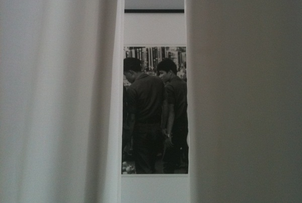

-
Later for Others: Danh Vo at Artists Space
by Stephanie Harris September 25, 2010
Upon exiting the elevator at Artists Space, viewers encounter a nearly vacant gallery. The colorless room is alight with the glow of sun caught in white curtains lining the windows. The unexpected emptiness is both comforting and unsettling. There is something beguiling in all that absence, as if the room is asking for our careful attention.
Elegiac in their preoccupying calm, the images and objects inhabiting Autoerotic Asphyxiation coyly recall the past, fashioning a peculiar nostalgia. Danh Vo, born in Vietnam in 1975, has created an environment which asks viewers to take an active role in exploring the histories behind the assembled relics. At the age of four, Vo and his family fled the Communist victory in Southern Vietnam. Hoping to reach American shores in a boat built by Vo’s father, they instead encountered a Danish shipping vessel, and, upon arriving in Denmark, were granted citizenship. Vo grew up in Europe, irresolute over his cultural identity, as his recollections of Vietnam became increasingly distant. Much of Vo’s work has been consumed by mining the abandoned trajectories, escaped identities and forgotten pasts that make up the enigma of his origins.
In recent years, Vo’s practice has emphasized appropriated items that question ideas of ownership and identity. Works have included the marker of his grandmother’s temporary grave – her name written in the Latin alphabet – as well as legal marriage documents lengthening his own name and three items coveted by his father in Vietnam but only attained in the West: a Rolex, a Dupont lighter and an American military class ring. Though these objects cite a personal history, they become detached as they interact with audiences and with one another, creating a kind of updated dialogue. Vo presents dismantled fragments of his own past to remind us that memory is a vestigial collection, perpetually reassembled, of which we are only a product or effect.

At Artists Space, Vo further pursues these themes with objects, photographs and documents that elicit a spirit of inquiry. The most immediately visible works in the room – the sheer curtains concealing both windows and walls – reveal, upon closer inspection, flowers embroidered in some of the fabric. These, in turn, are all species discovered throughout China and Tibet by French missionary and botanist Jean-Andre Soulie, who exported them to Europe. In 1905, Soulie was tortured and killed by Tibetan monks, though his memory remains embedded in his flowers’ Latin titles, crediting him with their existence.
Concealed behind the fabrics and tucked between windows are several sets of black and white photographs of Vietnamese men and boys. The intimate pictures exude an air of homoeroticism and evidence a keen fascination with masculine relationships in Vietnam. Images of men working or eating are accompanied by photos of men holding hands and embracing. Moving through the gallery becomes an active search as one parts the curtains along each wall to locate the photographs. The act of displacing a physical partition rehearses the artists’ process while foregrounding the division between audience and photographer, past and present.
Accompanying the photographs are two framed documents which make up a codicil signed by Joseph M. Carrier and Danh Vo. The will grants ownership of Carrier’s possessions, including the photographs, to the artist. Employed by the RAND Corporation in Vietnam from 1962-1973 and, as a gay man from America, Carrier was fascinated by the alternative presented by Vietnamese culture. Struck by the outward affection between men, Carrier documented the behavior with his camera. In the series, the war is a dim, even coincidental, backdrop. It appears in only one of the photos, as a distant, hazy bomb cloud observed by a line of bathing boys in the foreground. Carrier was fired after nine years in Vietnam over suspicion of homosexual activities which RAND considered a security threat.
Carrier’s fascination continued into his later life and illuminates his relationship with Vo, which led to the excavation of the photographs. The images, captured in the decade when Vo was living in Vietnam, provide a survey of this undocumented and forgotten period in his life. The legal documents become an appendage to his identity, physical evidence of his own reconstruction of the past. The lives and scenes captured by Carrier grant Vo the remains of a personal story with which to construct an autobiography.
02.02.1861 conjures a similar exchange, albeit in the opposite direction. The piece is a handwritten copy of a letter from Saint Theophane Venard reproduced by Phung Vo, the artist’s father. Theophane Venard was a priest with the Paris Foreign Missions Society who moved to Vietnam in 1852, when it was illegal to proselytize in the country. Confronted by authorities, Venard refused to stop his ministry and was taken into custody. Shackled in a cave, he spent three months writing letters to his family and friends as he awaited execution. His correspondence expresses no remorse for his actions or fear of death, as he instead anticipates martyrdom with excitement and unshaken faith. The letter copied by Phung Vo was Venard’s last and was written to his father. He writes: “a light blow of the saber will separate my head as a spring flower that the master of the garden gathers for his pleasure. We all are a flowers on earth that god picks up when the time arrives, earlier for some, later for others.” In interviews, Vo has expressed a sympathy for the French missionaries and their well-meaning, if quixotic, beliefs.
Venard’s glorification of his own death is set against the exhibition’s accompanying text, printed on a metal plate near the letter. An excerpt from the ‘Department of Correction, State of Delaware: Execution by Hanging, Operation and Instruction Manual’, it details the standardized process for preparing the gallows in startlingly systematic language. Describing a procedure in stark contrast to Venard’s euphoric expectation, the tension between the two centers our attention on the interaction of the priest’s identity and the reality of his fate. An imminent beheading, filtered through the idiom of individual history, becomes a revelation.
Near the letter is a photograph of Venard and other missionaries as they are leaving Paris in September of 1852, along with a passport photo of Vo taken in 1980, upon his arrival in Denmark. This photograph of a vulnerable young Vo brings the room, and the show’s title, into focus. The image of ‘autoertotic asphyxiation’ is that of a life snuffed out through repeated attempts at summoning an identity held hopelessly in reserve, a literally terminal self-fascination. As a title, the term offers a winking apology for the same. In the latter case, Vo needn’t have worried. His exhibition invites us in, offering a deft, intimate portrait of the provisioning of memory into self. In choreographing his own nonlinear past, Vo reminds us that though history is made of sedimentary traces, its trajectory is our own creation.

1 Comment
Active Desire: all we ever wanted at EFA
[...] effects in his own work, this bust must be doubly redolent for Vo, who seems interested in different kinds of [...]